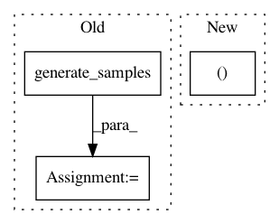

e5a659aa52c02eed0368d917a66cc8afb4c9fbf8,ml/rl/test/gridworld/test_gridworld_parametric.py,TestGridworldParametric,_test_trainer_sarsa_factorized,#TestGridworldParametric#Any#Any#,204
Before Change
def _test_trainer_sarsa_factorized(self, use_gpu=False, use_all_avail_gpus=False):
environment = GridworldContinuous()
samples = environment.generate_samples(100000, 1.0, DISCOUNT)
trainer = self.get_sarsa_trainer(
environment,
self.get_sarsa_parameters_factorized(),
use_gpu=use_gpu,
use_all_avail_gpus=use_all_avail_gpus,
)
predictor = trainer.predictor()
evaluator = GridworldContinuousEvaluator(
environment, False, DISCOUNT, False, samples
)
tdps = environment.preprocess_samples(
samples, self.minibatch_size, use_gpu=use_gpu
)
for tdp in tdps:
trainer.train(tdp)
After Change
self.check_tolerance = False
self.tolerance_threshold = 0.15
environment = GridworldContinuous()
trainer, exporter = self.get_sarsa_trainer_exporter(
environment,
self.get_sarsa_parameters_factorized(),
use_gpu,
In pattern: SUPERPATTERN
Frequency: 3
Non-data size: 3
Instances
Project Name: facebookresearch/Horizon
Commit Name: e5a659aa52c02eed0368d917a66cc8afb4c9fbf8
Time: 2018-10-24
Author: jjg@fb.com
File Name: ml/rl/test/gridworld/test_gridworld_parametric.py
Class Name: TestGridworldParametric
Method Name: _test_trainer_sarsa_factorized
Project Name: facebookresearch/Horizon
Commit Name: e5a659aa52c02eed0368d917a66cc8afb4c9fbf8
Time: 2018-10-24
Author: jjg@fb.com
File Name: ml/rl/test/gridworld/test_gridworld_parametric.py
Class Name: TestGridworldParametric
Method Name: _test_trainer_sarsa
Project Name: pymc-devs/pymc3
Commit Name: d15d9ad19021a8a3f26a86fbc6b71838ac37e7d1
Time: 2017-03-30
Author: jonathan.h.friedman@gmail.com
File Name: pymc3/distributions/multivariate.py
Class Name: MvNormal
Method Name: random